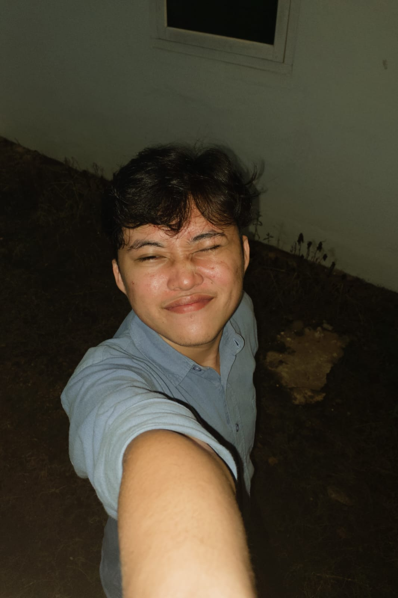

Hello, I am
Ikbal Feri Amanda

About Me
Halo, saya Ikbal Feri Amanda. Portfolio ini saya buat sebagai bagian dari perjalanan belajar serta untuk menampilkan kemampuan yang telah saya kembangkan. Saya mempelajari berbagai bidang editing, seperti desain grafis, video editing, dan tipografi, serta terus mengembangkan kemampuan tersebut dari waktu ke waktu. Portfolio ini juga merupakan bagian dari tugas Ujian Tengah Praktikum. Terima kasih telah berkunjung.
Education
2024 – Sekarang Universitas Lampung Computer ScienceHimakom
Kepala Bidang Media Informasi Periode 2026Education History
Universitas
Universitas Lampung
S1 — Computer Science
2024 — Sekarang
Sebagai mahasiswa Ilmu Komputer yang saat ini berada di semester 4, saya aktif mengikuti kegiatan organisasi kampus. Saya pernah mengikuti ADAPTER pada periode 2024, kemudian aktif sebagai anggota di bidang Media Informasi pada periode 2025, dan saat ini menjabat sebagai Kepala Bidang Media Informasi.
SMA
SMAN 3 Kotabumi
Jurusan IPA
2021 — 2024
Pada jenjang SMA, saya mulai aktif berorganisasi dengan bergabung dalam ETC dan Rohis. Melalui kedua organisasi tersebut, saya mengembangkan kemampuan teknis, komunikasi, serta kerja sama tim. Selain itu, saya juga dipercaya menjadi bagian dari PK sekolah, yang melatih tanggung jawab, kedisiplinan, serta kontribusi aktif dalam lingkungan sekolah.
MTs
MTsN 1 Lampung Utara
2018 — 2021
Saat di SMP, saya belum terlalu aktif dalam organisasi formal. Namun, saya mengikuti kegiatan tenis meja bersama teman-teman, yang memberikan pengalaman dalam kerja sama tim, konsistensi, serta menjaga semangat kebersamaan.
MI
MIN 7 Lampung Utara
2012 — 2018
Pada masa sekolah dasar, saya tergolong aktif dalam mengikuti berbagai kegiatan lomba. Pengalaman ini membantu membentuk rasa percaya diri, keberanian, serta semangat untuk terus mencoba hal-hal baru.
Programming Languages
HTML / CSS
30%
JavaScript
30%
Python
40%
Java
30%
CPP
70%